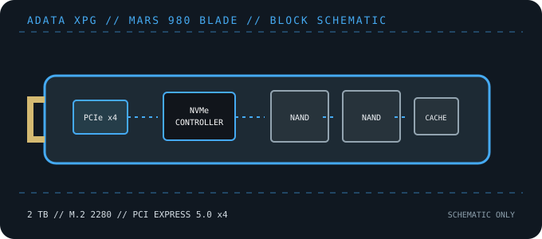

[ PCIE 5.0 NVME DRIVES // IDENTIFIED PRODUCT ]
ADATA XPG MARS 980 BLADE 2 TB (SMAR-980B-2TCS)
2 TB M.2 2280 PCIe Gen5 x4 SSD from the low-profile XPG MARS 980 BLADE branch. Do not confuse this module with the MARS 980 STORM active-cooling package.

IDENTIFICATION: Confirm the printed model code, capacity, suffix, hardware revision and firmware against the actual drive. Similar family names can denote different heatsinks, controller platforms and performance. Values here identify the cited 2 TB SKU and remain subject to the linked manufacturer documentation.
Manufacturer-identified specifications
| Model / manufacturer code | ADATA XPG MARS 980 BLADE 2 TB (SMAR-980B-2TCS) — SMAR-980B-2TCS |
|---|---|
| Capacity / physical format | 2 TB; M.2 2280, low-profile bare module |
| Interface / lane width | PCI Express 5.0 x4; backward operation depends on host PCIe/NVMe support. |
| Protocol | NVMe command protocol; exact revision and optional features depend on drive firmware and host support. |
| Vendor-rated sequential performance | Up to 14,000 MB/s read / 13,000 MB/s write; peak ratings, not sustained guarantees. |
| Endurance / warranty | 1,480 TBW; 5-year limited warranty (regional terms apply) |
| Controller / flash | Silicon Motion SM2508; 3D NAND (capacity-specific flash details may vary by revision). Component details can vary by production revision; use the exact drive label and current manufacturer documentation. |
| Cooling / package note | BLADE package is the compact module variant rather than the active-heatsink STORM edition. Follow ADATA guidance for the host’s M.2 thermal solution and verify clearance in the intended device. |
Compatibility, installation & service
- Requires a PCIe/NVMe-capable M.2 2280 socket; full rated bandwidth uses PCIe 5.0 x4. ADATA lists compatibility with PS5 expansion, but actual performance and console qualification should be checked against the latest ADATA and Sony guidance.
- The BLADE SKU is distinct from the thicker active-cooled STORM edition. Use only the host heatsink configuration permitted by ADATA and the system manual; account for laptop double-sided/height limits.
- Check shared PCIe/SATA lanes, system firmware and boot support. Back up data before firmware work and monitor temperatures under sustained transfers.
- Before replacing a boot drive, create a recoverable backup and confirm OS recovery media, encryption keys and firmware settings. Follow clean shutdown and electrostatic-discharge precautions; do not hot-plug M.2 unless the platform manual explicitly supports it.
Product references
- XPG — MARS 980 BLADE PCIe Gen5 x4 SSDManufacturer product page for the BLADE edition.
- ADATA/XPG — MARS 980 BLADE product datasheet (PDF)Manufacturer capacity, speed, endurance and warranty data sheet.
Manufacturer ratings are capacity- and test-condition-specific. Independent tests characterize only the tested sample and workload. Consult current manuals and support portals for revisions, fit, firmware and warranty conditions.